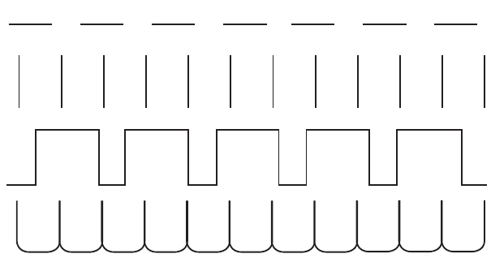

Unit One - Pre-writing exercises - Lesson 1: Drawing lines and patterns
Unit One
Pre-writing exercises

Lesson 1
Drawing lines and patterns

Draw the horizontal lines.
Keyboard alternative
Draw the vertical lines.
Keyboard alternative
Draw the square-step pattern.
Keyboard alternative
Draw the rounded-arch pattern.